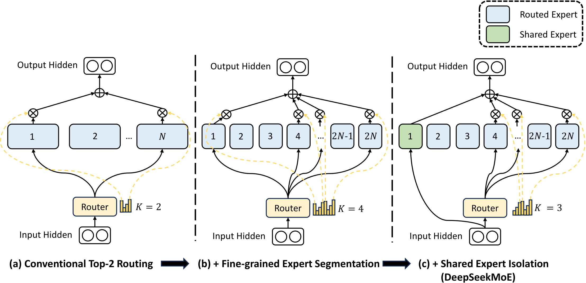
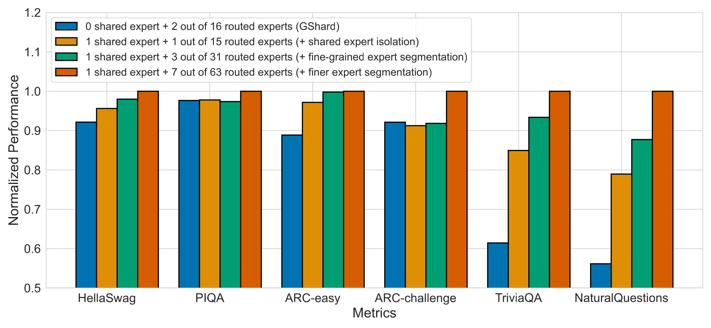
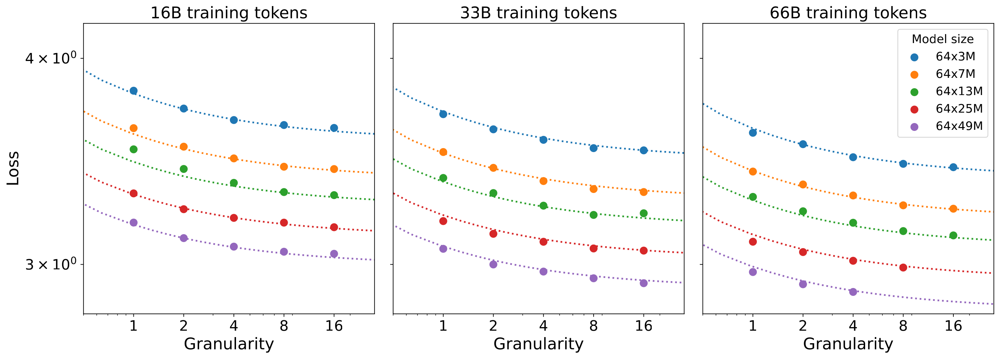
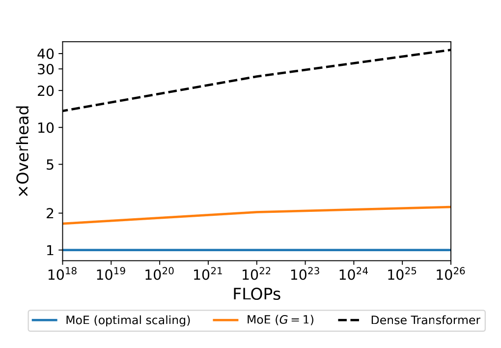
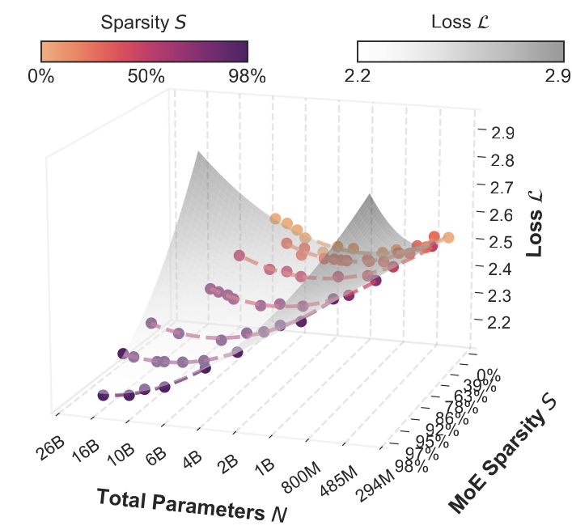
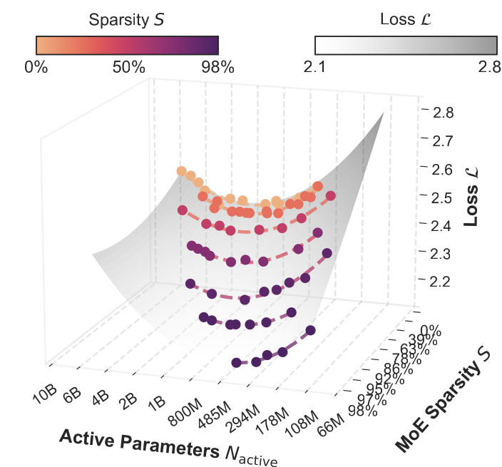
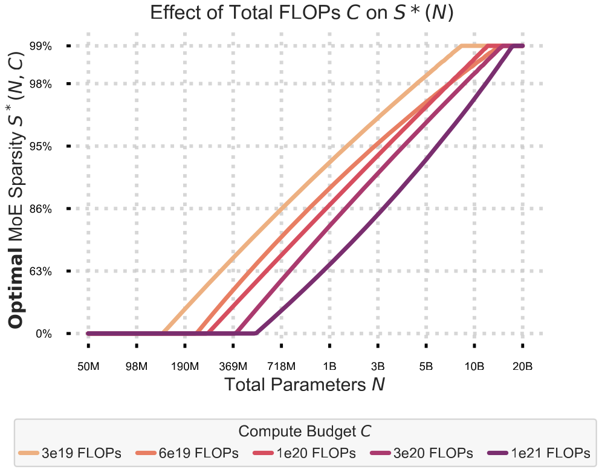
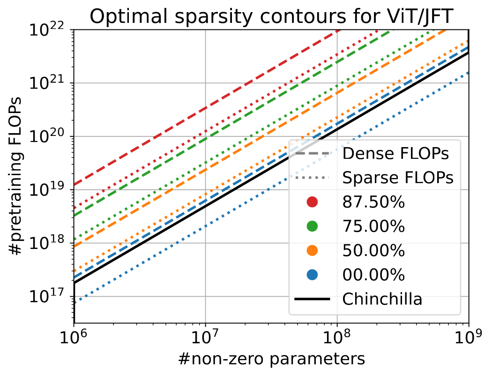

MoE 大模型中的"比例"设计：Dense / 共享专家 / 激活参数占比
文献综述
摘要 Overview
混合专家（Mixture-of-Experts, MoE）已成为前沿大模型的主流稀疏化手段。围绕"多少参数应当被激活"、"共享专家与路由专家如何配比"、"专家切多细"、"多少层保持 Dense"这四个问题，学界与工业界给出了不同甚至相互矛盾的答案。本文系统梳理 2022–2025 年间的代表性工作。
(Mixtral→Kimi-K2)
三条贯穿全文的核心发现
- 越稀疏越好，但有条件。 在预训练 loss 与固定算力下，只要总参数预算不受限，更高的激活稀疏度（更小的激活/总参数比）几乎总是更优——Apple (2501.12370) 测到 98% 稀疏仍无拐点。工业界激活率从 Mixtral 的 28% 一路降到 Kimi-K2 的 3.2%，与此一致。
- 专家要切得"细"，且最优粒度随规模上升。 传统"一个专家 = 一整个 FFN"(粒度 $G{=}1$) 在几乎所有算力下都是次优；最优粒度 $G$ 随算力预算单调增长（2402.07871）。
- "共享专家"是当前最大的开放争议。 DeepSeek 系坚持保留 1–2 个共享专家并称其"不可替代"；而 OLMoE 与 Qwen3 在自己的规模上做实验/做决策后取消了共享专家。没有任何论文系统扫过"共享:路由 = 1:6 vs 1:8 vs 1:10"并给出最优值。
先厘清：四个互不相同的"比例"维度
阅读所有论文前，必须把以下四个被口语统称为"比例"的概念分开，否则数字无法对话：
| 维度 | 定义 | 你说的 1:6 / 1:8 落在哪 | 典型取值 |
|---|---|---|---|
| A共享:路由 (激活口径) | 每 token 激活的 1 个共享专家 : N 个激活路由专家 | ✅ 就是这里。DeepSeek-V3 = 1:8、Kimi-K2 = 1:8、DeepSeekMoE-16B = 2:6 = 1:3 | 1:3 ~ 1:8 |
| B共享:路由 (总数口径) | 整层 shared 专家总数 : routed 专家总数 | 若你指总数，则现代细粒度 MoE 是 1:64 ~ 1:256，不是 1:6 | 1:64 ~ 1:256 |
| C粒度 Granularity $G$ | $G = d_\text{ff} / d_\text{expert}$，FFN 维度 / 单专家维度，即"切多细" | 与共享比例正交 | $G{=}4{\sim}64$ |
| D激活/总参数 稀疏度 $S$ | 激活参数 / 总参数（或 $S=(E{-}K)/E$） | 与共享比例正交 | V3=5.5%；Kimi=3.2% |
论文全景表：谁真正做了"比例消融"
绿色 = 做了受控消融 棕色 = 技术报告，仅采用固定值
| 论文 / 报告 | 年份 | 机构 | 主研究维度 | 是否扫描比例 | 核心比例结论 |
|---|---|---|---|---|---|
| DeepSeekMoE 2401.06066 | 2024 | DeepSeek | A 共享:路由 | ✅ 扫 1/2/4 共享 | 选 1 共享 : 3 激活路由 (1:3)；差异在噪声内 |
| Fine-Grained Scaling 2402.07871 | 2024 | U. Warsaw | C 粒度 $G$ | ✅ 扫 G∈{1..32} | $G{=}1$ 几乎总次优；最优 $G$ 随预算从 8 升到 64 |
| Params vs FLOPs 2501.12370 | 2025 | Apple | D 稀疏度 $S$ | ✅ 扫 S 0→98% | 总参不限时越稀疏越好，S* 趋近 1.0 |
| Unified Scaling (Routed) 2202.01169 | 2022 | DeepMind | D 专家数 $E$ | ✅ 扫 E 2→512 | 甜点 E≈64–128；约 314 专家封顶 |
| OLMoE 2409.02060 | 2024 | Ai2 | A 共享 + C 粒度 | ✅ 扫粒度+共享 | 1B 激活下不要共享专家；64 专家性价比最高 |
| Sparsely-Connected 2309.08520 | 2023 | Google DM | D 权重稀疏 | ✅ 扫 S 0→0.875 | 75% 稀疏是甜点；最优稀疏随数据上升 |
| On DeepSeekMoE 2505.10860 | 2025 | UT Austin 等 | A 共享(理论) | 理论分析，未扫数量 | 共享专家更省样本；"最优数量"列为开放问题 |
| DeepSeek-V2 2405.04434 | 2024 | DeepSeek | 采用值 | ❌ 沿用 DeepSeekMoE | 2 共享 : 160 路由；21B/236B=8.9% |
| DeepSeek-V3 2412.19437 | 2024 | DeepSeek | 采用值 | ❌ 沿用 V2 | 1 共享 : 256 路由；前 3 层 dense；5.5% |
| Qwen2 2407.10671 | 2024 | Alibaba | 采用值 | ❌ 仅引用 | 8 共享 : 64 路由；14B/57B≈24.6% |
| Qwen3 2505.09388 | 2025 | Alibaba | 采用值 | ❌ 直接删共享 | 0 共享 : 128 路由；约 1/10 激活率 |
| Hunyuan-Large 2411.02265 | 2024 | Tencent | 采用值 | ❌ | 1 共享 : 16 路由；52B/389B=13.4% |
| Kimi-K2 2507.20534 | 2025 | Moonshot | 采用值 | ❌ | 1 共享 : 384 路由；32B/1T=3.2%（极稀疏） |
| MiniMax-01 2501.08313 | 2025 | MiniMax | 采用值 | ❌ | 32 专家；45.9B/456B≈10% |
| Skywork-MoE 2406.06563 | 2024 | Skywork | 采用值 | ❌ | 16 专家 top-2；约 15% 激活 |
| Jamba 2403.19887 | 2024 | AI21 | B Dense/MoE 层 | ❌ 仅 MoE 开关 | 每隔一层用 MoE；12B/52B≈23% |
| Mixtral 2401.04088 | 2024 | Mistral | 采用值 | ❌ | 8 专家 top-2，无共享，G=1；13B/47B≈28% |
合理实验设计模板：六篇消融论文的共同方法
把 6 篇真正做受控实验的论文方法抽象出来，一个"研究比例影响"的标准实验应满足：
- 固定一个轴，只扫研究对象。 固定激活参数（≈推理算力）+ 固定训练 tokens，只改你要研究的那个比例。绝不能让 FLOP 跟着变——否则你测的是"算力差异"而非"比例差异"。DeepSeekMoE 反复强调"all compared models have the same number of total and activated parameters"。
- 用 IsoFLOP / 多算力预算。 至少 3–5 个算力档位，每档独立找最优，才能暴露所有 scaling-law 论文的共同规律：最优比例随规模漂移（Apple 用 5 档 3e19~1e21；粒度论文用 6 档；Google 扫 N×D×S 立方体）。
- 主指标用预训练 loss / BPB / 困惑度。 辅以下游 benchmark。小规模即可出趋势——DeepSeekMoE 与 OLMoE 都在 ≤130B tokens、≤2B 参数下得出结论。
- 拟合 scaling law 外推。 形如 $L(N, D, \text{ratio})$，用 Huber loss + BFGS/L-BFGS 拟合，再解出每个算力预算下的最优配置，而不是只在单一规模下两两比较。
- 共享专家消融的陷阱。 做 0/1/2/4 共享对比时，必须保持激活专家总数恒定——把一个路由专家改成共享，而不是凭空加一个。OLMoE 正是用"31 路由+1 共享激活 3" vs "32 路由激活 4"（都激活 4 个、参数算力相同）才得到可信结论。否则共享专家"看起来更好"只是因为多算了参数。
维度 A · 共享专家 : 路由专家比例
这是最贴近你"1:6 / 1:8"问题的维度。结论分两派：DeepSeek 系（保留共享）vs OLMoE/Qwen3（取消共享）。
DeepSeekMoE 提出两大设计：细粒度专家切分（fine-grained segmentation）+ 共享专家隔离（shared expert isolation）。它是本综述里唯一把"几个专家做共享"当作自变量来扫描的工作。

实验设计（Section 4.4, Figure 3）
三组消融，全部固定总参数 ≈2B、激活 ≈0.3B、训练 100B tokens（Pile）、固定 4.3T FLOPs/2K tokens，主指标为 Pile 验证集 cross-entropy loss：
- ① 共享专家隔离： 1 共享 vs 0 共享（把那个专家改回路由），总参数/算力不变。
- ② 细粒度切分： 在共享+路由框架下，把专家切成 2 份或 4 份 → 32（1 共享+31 路由）或 64（1 共享+63 路由）总专家，参数算力恒定。
- ③ 共享:路由比例扫描（核心）： 在 64 个细粒度专家、固定总数与激活数下，把指定为共享的数量设为 1 / 2 / 4，对应激活路由数随之改变，测 Pile loss。

关键结果
(激活掉共享→暴涨)
- 共享数量扫描（核心问题）： 1 / 2 / 4 共享给出 Pile loss = 1.808 / 1.806 / 1.811。差异落在噪声内，2 共享微弱最优，但最终选 1 共享 : 3 激活路由 (1:3) 作为可放心放大的默认值。
- 共享专家不可替代： 关掉共享专家（多加一个路由补偿）后，等算力下 Pile loss 从 1.808 暴涨到 2.414。
- 细粒度单调更好： 16→32→64 专家性能单调提升。
- 放大配置： 16B 版用 2 共享 + 64 路由，激活 2 共享 + 6 路由（仍是 1:3）；首层保持 dense。
OLMoE-1B-7B（6.9B 总 / 1.3B 激活，64 专家 top-8，无共享，全 MoE 层）。全开源，对粒度与共享专家各做一组严格消融，均固定激活/总参数/FLOPs，ablation 跑到约 130B tokens。
实验设计
- 粒度消融（Fig 5）： 同步改变"专家数 × FFN 维度"使激活+总参数恒定。配置：8 专家（大，激活 1，组合数 $C_8^1{=}8$）→ 32 专家（FFN 2048，激活 4，$C_{32}^4{=}35{,}960$）→ 64 专家（FFN 1024，激活 8，$C_{64}^8{=}4.4\times10^9$）。指标：训练/验证 loss + HellaSwag/MMLU。
- 共享专家消融（Fig 6）： 两种配置激活/总参数与 FLOPs 完全相同——"32 路由专家激活 4（无共享）" vs "31 路由 + 1 始终激活共享、激活 3 路由（仍激活 4 个）"。组合数 $C_{32}^4{=}35{,}960$ vs $C_{31}^3{=}4{,}495$。
关键结果
- 粒度： 8→32 专家在 HellaSwag/MMLU 提升约 10%；但 32→64 仅再 +1~2%（明显递减）。考虑到 5T tokens 远超 compute-optimal，最终选 64 专家。
- 共享专家： "1 共享 + 1 路由" 比 "2 路由" 略差。OLMoE 的解释直击要害：把一个路由专家变共享，专家组合数从 35,960 锐减到 4,495，损失约 90% 的组合灵活性——这与 DeepSeekMoE 宣称的共享专家收益直接矛盾。
- 结论： 1B 激活规模下不用共享专家。 这也预示了 Qwen3 后来取消共享专家的决策。
这篇从统计估计理论解释"为什么共享专家有用"，但没有扫描共享数量。它在合成数据 + 语言模型（66 专家：top-6 路由 + 2 共享）+ 视觉语言（top-3 路由 + 1 共享）三类固定配置上验证理论。
核心结论
- 共享专家更省样本： 共享专家的估计收敛率恒为 $O_P(n^{-1/4})$，不受过参数化影响；而 DeepSeek-V2 的 softmax 门控下，路由专家收敛率可能慢得多（取决于多项式系统可解性）。
- 归一化 sigmoid 门控（V3） 让路由专家收敛率提升到最快 $O_P(n^{-1/2})$，且不再依赖多项式可解性——这为 V3 从 softmax 改 sigmoid 提供了理论依据。
- 实测增益温和： DeepSeek 变体用约 70–80% 的训练步数即可达到 Vanilla SMoE 的最终性能（收敛更快），但绝对 PPL 差异仅约 0.2。
维度 C · 粒度 Granularity
本文定义粒度 $G = d_\text{ff} / d_\text{expert}$——在固定激活参数下把 FFN 切成多少份小专家。$G{=}1$ 即"专家=完整 FFN"（传统做法）；$G{>}1$ 时每个专家是 FFN 的 $1/G$，每 token 路由到 $G$ 个。它与扩展率 $E$=总参/激活参配对，专家总数 $N_\text{expert}=G\cdot E$。无共享专家、无 dense 层（全 MoE）。
实验设计
- 固定： 扩展率 $E{=}64$（每 token 激活参数恒定），FLOP 经 scaling-law 对齐。
- 扫描： 粒度 $G\in\{1,2,4,8,16\}$（极端到 64）、模型 129M~3.7B、tokens 16B~130B。附录再用 $E{=}16$ 复验。共 >100 次训练。
- 拟合： 三元 scaling law $L(N,D,G)$，Huber loss（$\delta{=}0.1$）+ BFGS，RMSE 0.015。FLOP 计入路由开销。


关键结果
- 高粒度单调降 loss： $L_{N,D}(G)=g/G^{\gamma}+h$，拟合 $\gamma\approx0.58$。
- $G{=}1$ 几乎处处次优——论文的核心论断。
- 最优 $G$ 随预算增长： 100M 激活 → $G{=}8$；1–3B → $G{=}16$；7–70B → $G{=}32$；300B–1T → $G{=}64$。
- MoE 永远胜 dense（当 $N,D,G$ 全取最优）。
维度 D · 激活 / 总参数稀疏度
这是直接回答你"激活参数占多少合适"的维度，也是三篇重量级 scaling-law 论文的战场。
本文把稀疏度 $S=(E-K)/E$（非激活专家占比，等价于激活/总参数比）当作中心轴，用 IsoFLOP 方法找最优 $S$。$S{=}0$ 即 dense；$S\to1$ 即极稀疏。Dropless MoE（Megablocks），GLU FFN，QK-norm。
实验设计（大规模 IsoFLOP）
- 扫描： 稀疏度 $S\in\{0,25,50,75,90,95,98\}\%$（7 档含 dense）、总参数 $N$、激活参数 $N_a$——通过调整总专家数 $E$ 与激活数 $K$。
- 固定/系统扫： 5 个 IsoFLOP 算力预算 $\{3{\times}10^{19},\,6{\times}10^{19},\,10^{20},\,3{\times}10^{20},\,10^{21}\}$；每个 $(C,N,S)$ 调整数据量 $D$ 使 $C\approx 6 N_a D$ 恒定。
- 拟合： 每个预算拟合一张 $L(N,S)$ 二次曲面（交叉验证选 degree，held-out MSE 0.0001），再切片求最优 $S^*$；并拟合参数化 scaling law（含 $1/(1-S)^\lambda$ 项），在 $S{=}0.98$ 留出点验证。



关键结果
- 总参数不受限时：越稀疏越好。 每张 IsoFLOP 曲面沿稀疏轴 loss 单调降，最优 $S^*$ 趋近 1.0，在 3e19–1e21 全程无递减拐点。
- 总参数受限时： $L(S)$ 呈抛物线，存在内部最优；$S^*$ 随 $N$ 升、随 $C$ 降。
- Dense ($S{=}0$) 在预训练 loss 上始终被压制。
- 下游： 多数任务的下游误差仅由预训练 loss 决定、与稀疏度无关。唯一例外：阅读理解（SQuAD/CoQA）——等困惑度下 dense 迁移更好，但可用 CoT 补回（且 MoE 从 CoT 获益更多）。
最早把"参数量"与"算力"作为两个独立轴的工作。用 top-1 路由（$K{=}1$），让激活算力 $F\approx2N$ 恒定，而总参数 $P$ 随专家数 $E$ 线性增长——于是 $E$ 直接控制总:激活比。
实验设计
- 扫描： 专家数 $E\in\{2,4,8,16,32,64,128,256,512\}$ × dense 基座 $N$(15M~1.3B) × 3 种路由法 = 约 168 个模型。
- 固定： 全部 130B tokens、$K{=}1$、同架构族。
- 拟合： 六参数双线性律 $\log L(N,E)$，并导出 Effective Parameter Count，把路由模型映射到等效 dense 规模。
关键结果
- 加专家≈更大 dense，但强烈边际递减且有硬上限。 交叉项 $c{>}0$ 使路由收益随基座 $N$ 增大而缩水。
- 有效参数封顶： 路由在 s-base 法约 937B 等效参数后不再优于 dense；最大有用专家数约 314（s-base）。
- 实用建议： $E\in\{64,128\}$ 是性价比甜点；模型激活基座 $\le$ 1.3B 时都值得用路由。
严格说研究的是权重剪枝稀疏（无专家、无路由），但"激活/总"框架可类比 MoE。ViT(JFT-4B) + T5(C4) 两族，扫描如何让最优稀疏度随模型与数据变化。
实验设计
- 扫描： 稀疏度 $S\in\{0,0.5,0.75,0.875\}$ × 模型规模（7 ViT / 4 T5）× 数据量。共 112 ViT + 48 T5 次训练。
- 固定： 每次比较固定非零参数量 $N$ 与训练成本，找最低 loss 的 $S$。
- 拟合： 联合幂律 $L(S,N,D)$，分"dense FLOP"与"sparse FLOP"两种成本口径。

关键结果
- 最优稀疏随数据上升： 固定非零参数，训练越久（数据越多），最佳稀疏度越高。
- 75% 稀疏是稳健甜点： 给出约 2.15× 等效 dense 参数收益，在 ViT 与 T5 上惊人一致（$S{=}0.5$→1.6×；$S{=}0.75$→2.16×；$S{=}0.875$→2.63×）。
- 剪枝预训练 checkpoint 比从头训快 >4×。
维度 B · Dense 层 / Dense-MoE 混合架构
Jamba（12B 激活 / 52B 总）混合 Transformer-Mamba + MoE。每隔一层（$e{=}2$）才用 MoE，其余 MLP 层保持 dense；16 专家 top-2，无共享。这是"Dense 层与 MoE 层如何配比"维度的代表。
实验设计——但没扫 Dense/MoE 比例
- 关于 dense-vs-MoE 比例（$e,n,K$）没有受控扫描。唯一 MoE 相关对照是二元开关："Jamba 无 MoE" vs "Jamba+MoE"（都 7B/50B tokens，MoE 固定 $n{=}16,K{=}2,e{=}2$）。
- 专家配置是为塞进单张 80GB GPU（int8）+ 借鉴前作而定，"preliminary experiments" 无数字。
- 真正被扫的是正交的 attention:Mamba 比例（1:3 vs 1:7，Table 4）——结果两者几乎打平，故选 1:7 纯为省算力。
关键结果
- MoE 开关（Table 7）： 加 MoE 全面提升——OLLM 15.4→18.9、HellaSwag 36.6→38.1、WinoGrande 62.5→66.0。但只证明 MoE 有用，未证明何种比例最优。
- net：dense/MoE 比例由显存预算 + 前作启发式定，而非质量最优扫描。
工业技术报告：固定值数据点（不做消融）
以下报告不扫描比例，但提供了真实大规模的配置，可视作工业界的"经验共识"。把它们排在一起，能看出清晰的时间趋势。
| 模型 | 共享:路由(总数) | 激活专家 | 激活/总参数 | Dense 层 | 粒度 |
|---|---|---|---|---|---|
| Mixtral 8×7B | 0 : 8 | top-2 | 13B/47B ≈ 28% | 0 | G=1（粗） |
| Qwen2-57B-A14B | 8 : 64 | 8 共享+8 路由 | 14B/57B ≈ 24.6% | 0 | 细 |
| Jamba | 0 : 16 | top-2（隔层） | 12B/52B ≈ 23% | 半数 MLP | G=1 |
| Skywork-MoE | 0 : 16 | top-2 | ~22B/146B ≈ 15% | — | G=1（upcycle） |
| Hunyuan-Large | 1 : 16 | 1+1 | 52B/389B = 13.4% | — | 细 |
| MiniMax-01 | (32 专家) | — | 45.9B/456B ≈ 10% | — | — |
| Qwen3-235B-A22B | 0 : 128 | top-8 | 22B/235B ≈ 9.4% | 0 | 细 |
| DeepSeek-V2 | 2 : 160 | 2+6 | 21B/236B = 8.9% | 1/60 | 细 dim1536 |
| DeepSeek-V3 | 1 : 256 | 1+8 = 1:8 | 37B/671B = 5.5% | 前 3 层 | 细 dim2048 |
| Kimi-K2 | 1 : 384 | 1+8 = 1:8 | 32B/1T = 3.2% | — | 细 |
三条可观察趋势
- 激活率逐年走低： Mixtral 28% → V2 8.9% → V3 5.5% → Kimi-K2 3.2%。与 Apple "越稀疏越好"的 scaling law 高度吻合。
- 共享专家的"分化"： DeepSeek 系坚持 1 个共享；Qwen3 与 OLMoE 取消共享。这正是当前最大开放争议。
- 总数比例已是 1:64~1:256，不再是 1:6/1:8： 现代细粒度 MoE 把"专家个数"做大，"激活口径"才停在 1:8。
横向综合与结论
1. 直接回答你的 "1:6 / 1:8"
- 若指激活口径（1 共享 : N 激活路由）： 真实且主流。DeepSeek-V3 = 1:8、Kimi-K2 = 1:8、DeepSeekMoE-16B = 1:3。你记的 1:6~1:8 完全对得上 DeepSeek 系。
- 若指总数口径： 现代是 1:64~1:256，不是 1:6/1:8（那是 Mixtral 式粗粒度的旧印象）。
- ⚠️ 没有任何论文系统扫过"共享:路由 = 1:6 vs 1:8 vs 1:10"并给出最优值。 最接近的是 DeepSeekMoE 的 1/2/4 共享消融（结论：不敏感、在噪声内）和 2505.10860 的理论分析（明确称最优数量为开放问题）。
2. 各维度目前的"最优"答案
| 维度 | 当前最佳证据与建议 | 主要证据来源 |
|---|---|---|
| A 共享:路由 | 争议未决。小规模(≤1B 激活)证据倾向不用共享或仅 1 个；DeepSeek 在大规模坚持 1 个共享。务必"等激活数"做消融。 | DeepSeekMoE / OLMoE / 2505.10860 |
| C 粒度 $G$ | 用 $G{>}1$（细粒度）。最优 $G$ 随规模：100M→8，1–3B→16，7–70B→32，>300B→64。 | 2402.07871 / OLMoE |
| D 激活/总稀疏 | 总参不限→越稀疏越好(S*→1)；总参受限→存在内部最优，随模型增大而升高。工业落点 5%–10%，前沿已到 3%。 | Apple 2501.12370 / DeepMind 2202.01169 / Google 2309.08520 |
| 专家数 $E$ | 甜点 64–128；约 300+ 后有效参数封顶（固定 token 预算下）。 | 2202.01169 |
| B Dense 层 | 无系统消融。工业惯例：前 1–3 层保持 dense（浅层路由不稳）。 | DeepSeek-V2/V3（采用，未消融） |
3. 文献的三个空白（也是你若做实验的机会）
- 共享专家数量的 scaling law 缺失。 没人在多个规模、固定算力下系统扫描共享专家数并拟合 $L(N,D,K_s)$。2505.10860 亲口承认这是开放问题。
- Dense 层占比无对照实验。 "前 k 层 dense" 被广泛采用却从未被 ablate——k 取 0/1/3/6 对 loss 的影响是空白。
- 四维联合优化缺失。 现有论文各扫一维（A 或 C 或 D），把共享比例 × 粒度 × 稀疏度联合优化的工作几乎没有（Joint MoE Scaling Laws 2502.05172 是少数尝试，但不含共享专家）。
4. 给实践者的可操作配方
若要训一个新的 MoE 并想"少踩坑"，综合证据的保守配置：
- 激活率 取 5%–10%（对标 V3/MiniMax）；算力越大可越稀疏。
- 粒度 按目标激活规模选 $G$：~1B 激活用 16–32 个细粒度专家，~10B+ 用 64+。
- 共享专家 放 0 或 1 个——若放，务必用"等激活数"消融验证它在你的规模上确实有收益，别盲信任一派。
- 前 1–3 层 保持 dense FFN。
- 验证方法：固定激活参数 + 固定 tokens，多算力档位 IsoFLOP，拟合 $L(N,D,\cdot)$ 再外推——而不是单规模两两比。
论文出处
做了受控比例消融的论文（★ 核心）
- ★ DeepSeekMoE — arXiv 2401.06066（维度 A，唯一扫共享数量）
- ★ Scaling Laws for Fine-Grained MoE — arXiv 2402.07871（维度 C 粒度）
- ★ Parameters vs FLOPs (Apple) — arXiv 2501.12370（维度 D 稀疏度）
- ★ Unified Scaling Laws for Routed LMs (DeepMind) — arXiv 2202.01169（维度 D 专家数）
- ★ OLMoE (Ai2) — arXiv 2409.02060（维度 A+C）
- ★ Scaling Laws for Sparsely-Connected (Google) — arXiv 2309.08520（权重稀疏，可类比）
理论 / 联合 scaling law
- On DeepSeekMoE: Statistical Benefits of Shared Experts — arXiv 2505.10860
- Joint MoE Scaling Laws — arXiv 2502.05172
- Holistic Scaling Laws for Optimal MoE — arXiv 2603.21862
- Optimal Sparsity for Compositional Generalization — arXiv 2410.13964
工业技术报告（采用固定值）
- DeepSeek-V2 — 2405.04434 · DeepSeek-V3 — 2412.19437
- Qwen2 — 2407.10671 · Qwen3 — 2505.09388
- Hunyuan-Large — 2411.02265 · Skywork-MoE — 2406.06563
- MiniMax-01 — 2501.08313 · Kimi-K2 — 2507.20534
- Jamba — 2403.19887 · Mixtral — 2401.04088